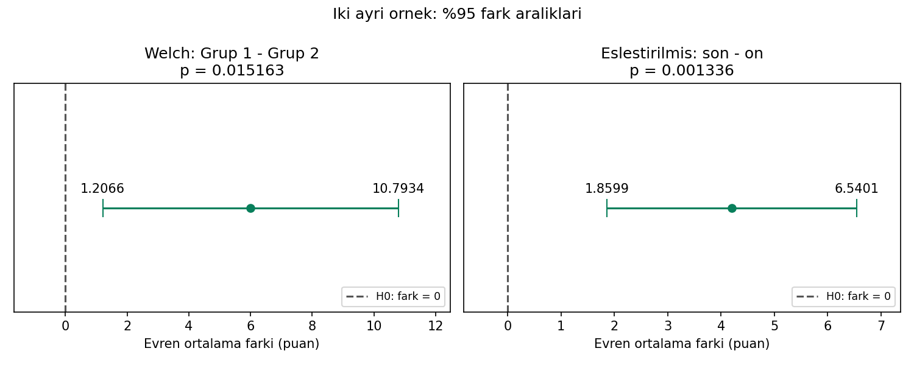

11 / BAĞIMSIZ VE EŞLEŞTIRILMIŞ T TESTLERI
Önce ölçümlerin ilişkisini belirle.
Bağımsız: n₁ = 30, n₂ = 28 · Ayrı eşleştirilmiş örnek: 20 çift
Sorudan yönteme
İki farklı grubun ortalamalarını karşılaştırmak ile aynı kişilerin önce–sonra farkını sınamak neden farklıdır?
Welch testi bağımsız grupların iki varyans katkısını birleştirir. Eşleştirilmiş testte analiz birimi kişi içi farktır; SE = s_fark/√n_çift.
Gör, karşılaştır, yorumla

Welch: fark = 6, t = 2,512074, sd ≈ 51,7113, p = 0,015163. Ayrı eşleştirilmiş örnek: fark = 4,2, t = 3,756594, sd = 19, p = 0,001336.
Bunlar aynı veriye uygulanan rakip testler değildir; iki ayrı tasarımın özetleridir. Eşleştirilmiş analizde ön ve son ölçümlerin ayrı standart sapmaları, farkların standart sapmasının yerine geçmez.
34 referans değerinin tamamı
Gösterim yuvarlatılmıştır; kodlar tam duyarlıklı CSV’yi kullanır.
| Grup | Ölçü | Değer |
|---|---|---|
| girdi | hacim_1 | 30 |
| girdi | ortalama_1 | 78 |
| girdi | standart_sapma_1 | 8 |
| girdi | hacim_2 | 28 |
| girdi | ortalama_2 | 72 |
| girdi | standart_sapma_2 | 10 |
| girdi | cift_sayisi | 20 |
| girdi | ortalama_fark | 4.2 |
| girdi | fark_sapmasi | 5 |
| girdi | alfa | 0.05 |
| welch | katki_1 | 2.133333333 |
| welch | katki_2 | 3.571428571 |
| welch | fark | 6 |
| welch | standart_hata | 2.38846434 |
| welch | serbestlik | 51.71130931 |
| welch | t | 2.512074348 |
| welch | p_cift | 0.01516286855 |
| welch | kritik_t | 2.006913491 |
| welch | hata_payi | 4.793441308 |
| welch | alt_sinir | 1.206558692 |
| welch | ust_sinir | 10.79344131 |
| welch | genislik | 9.586882616 |
| welch | reddet_cift | 1 |
| eslesmis | standart_hata | 1.118033989 |
| eslesmis | serbestlik | 19 |
| eslesmis | t | 3.756594202 |
| eslesmis | p_cift | 0.001335733262 |
| eslesmis | kritik_t | 2.093024054 |
| eslesmis | hata_payi | 2.340072032 |
| eslesmis | alt_sinir | 1.859927968 |
| eslesmis | ust_sinir | 6.540072032 |
| eslesmis | genislik | 4.680144064 |
| eslesmis | reddet_cift | 1 |
| eslesmis | dz | 0.84 |
Aynı veri, üç yazılım
ZIP’i tamamen ayıklayın. Çalışma klasörü b11/ornek-01 olmalıdır. Kodlar bilgisayarınızda çalışır.
Python
py cozum.py --check --grafikNumPy, pandas, SciPy ve Matplotlib gerekir. Beklenen: 34 kontrol değeri eşleşiyor.
R / RStudio
Rscript --vanilla cozum.R --check --grafikStandart R yeterlidir. RStudio konsolunda source("cozum.R") yalnız hesapları gösterir; otomatik kontrol için:
kontrol_et(sonuc, read.csv("beklenen-sonuclar.csv", stringsAsFactors=FALSE))IBM SPSS 29 · kullanıcı sayısal kontrolü geçti
SPSS 29 adım adım kontrol rehberi
CD 'C:/.../b11/ornek-01'.
INSERT FILE='spss-dogrula.sps' ERROR=STOP.Sonra aynı klasörde terminalden:
py spss_karsilastir.py --surum 29 --rapor spss-sonuc.jsonSPSS dışa aktarımı olmadan bu kontrol geçmez. SPV çıktısını ve JSON raporunu birlikte saklayın.
Önce tahmin et, sonra açıkla
20 kişinin iki ölçümü varsa eşleştirilmiş testte n ve serbestlik derecesi kaçtır?
Gerekçeli yanıtı göster
n = 20 çift, sd = 19’dur. 40 ölçümü 40 bağımsız gözlem gibi saymak yanlıştır. Buradaki eşleştirilmiş %95 fark aralığı [1,8599; 6,5401]’dir.
Doğrulama durumu
| Ortam | Durum |
|---|---|
| Python | 34 referans değeri; grafik üretimi ve hatalı girdi kontrolleri geçti. |
| R 4.3.3 | 34 referans değeri ve Python–R sonuç karşılaştırması geçti. |
| IBM SPSS | 34/34 kontrol kullanıcı ortamında geçti; başarılı konsol sonucu paylaşıldı. Ham JSON/CSV ve tam SPV günlüğü ayrıca incelenmedi. |
17 Eylül 2026. Sayısal uyum, araştırma varsayımlarının sağlandığını kanıtlamaz.